China Minimum Wage 2026: What Foreign Employers Must Budget for Before Hiring
Key takeaways
- China minimum wage rules are local, not national, so hiring plans must be mapped city by city.
- Wage-floor changes can affect payroll calculations beyond base salary, including probation and certain leave-related pay logic.
- EOR buyers should assess not just legal updates, but update speed, exception handling, and audit trail quality.
- The safest approach is a quarterly wage-floor review tied to contract templates and payroll simulations.
What changed—and why this matters now
For many international teams, “minimum wage” sounds like a basic compliance checkbox. In China, it behaves more like an operating variable that can change by jurisdiction and implementation cadence. Local authorities continue to adjust monthly and hourly standards over time, and those shifts can create hidden issues when employers use one centralized policy playbook across multiple cities. If a company expands headcount quickly, these mismatches can persist unnoticed until an employee complaint, an internal audit, or a dispute triggers deeper review.
The practical point for foreign employers is straightforward: wage compliance in China is a location-governance issue, not a single payroll setting. If your local legal baseline, offer structure, and payroll logic are not synchronized, risk usually appears first in exceptions—not in average-case employees.
Policy context: why one China compensation template is often not enough
In global organizations, HR teams naturally aim for standardized compensation frameworks. That discipline is useful, but in China it needs local adapters. Minimum wage standards, practical enforcement expectations, and payroll mechanics can differ by city and province. When a team assumes one baseline is sufficient, they often discover inconsistencies in probation-pay configuration, leave calculations, or policy wording tied to outdated legal references.
A useful operating model is a national compensation framework plus local compliance annexes. The annexes should define applicable thresholds, update timelines, and escalation ownership. This keeps consistency where possible while preserving legal precision where required.
Where foreign employers usually underestimate risk
1) “We already pay above market, so minimum wage won’t affect us”
This assumption holds for many full-time packages, but not all payroll outcomes. Problems usually appear in edge conditions: probation arrangements, temporary attendance reductions, unpaid leave transitions, and salary structures with heavy variable components. Legal baselines can still matter even if total annual compensation is competitive.
2) Template drift between legal updates and payroll operations
Another common issue is timing drift. Legal or compliance teams may identify updates quickly, while payroll configuration or contract template refreshes happen later. That delay window is where errors accumulate. The result is often a technically fixable issue that still damages employee trust.
3) Over-reliance on vendor assurances without governance evidence
If you work through an EOR, execution quality is critical—but so is client-side verification. You should be able to review update logs, impacted employee mapping, simulation evidence, and communication records. Without those controls, organizations can mistake operational confidence for actual compliance readiness.
Practical action checklist for EOR and HR leaders
1. Build a city-level wage baseline matrix and assign accountable owners.
2. Run a monthly legal-monitoring checkpoint with timestamped source references.
3. Simulate payroll impact before effective-date changes are applied.
4. Refresh offer templates and probation language after any threshold update.
5. Publish concise manager guidance for high-risk compensation scenarios.
6. Archive implementation evidence: source notice, affected roles, simulation output, approvals, and communication records.
This six-step cycle is light enough for recurring operations and strong enough for dispute preparedness.
What to watch next
- Local adjustment pace may remain uneven across jurisdictions, which means multi-city employers should expect staggered update windows.
- As global teams expand remote and hybrid hiring structures, location-definition clarity in contracts will become increasingly important.
- In practice, dispute scrutiny tends to focus on consistency of documentation and execution, not policy intent alone.
FAQ
Is there one nationwide minimum wage for all of China?
No. Minimum wage standards are issued locally, so employers need city/province-level tracking.
If employees are paid well above minimum wage, can we skip ongoing checks?
No. Edge-case payroll scenarios can still create compliance exposure.
Can EOR fully eliminate this risk?
EOR can reduce execution risk significantly, but client governance and evidence review are still essential.
How often should we review wage-floor exposure?
At least quarterly, plus ad-hoc checks when local updates are published.
What is the first high-value control to implement?
A city-level wage matrix linked to payroll simulation and contract-template refresh workflows.
Disclaimer
This article is informational only and does not constitute legal advice.
Sources
- Ministry of Human Resources and Social Security (MOHRSS): http://www.mohrss.gov.cn/
- Local HRSS bureau notices and implementation updates
- International Labour Organization resources: https://www.ilo.org/
Need local employment support in China?
If you need a compliance-first Employer of Record (EOR) partner for hiring, payroll, and risk controls in China, China-Payroll.com can help your team evaluate the right setup.
Image Prompt Pack
Create a 16:9 hero image for article title: 'China Minimum Wage 2026: What Foreign Employers Must Budget for Before Hiring'. Scene: HR compensation planning meeting with salary benchmark charts and city map pins across China. Include motifs: payroll sheets, co…